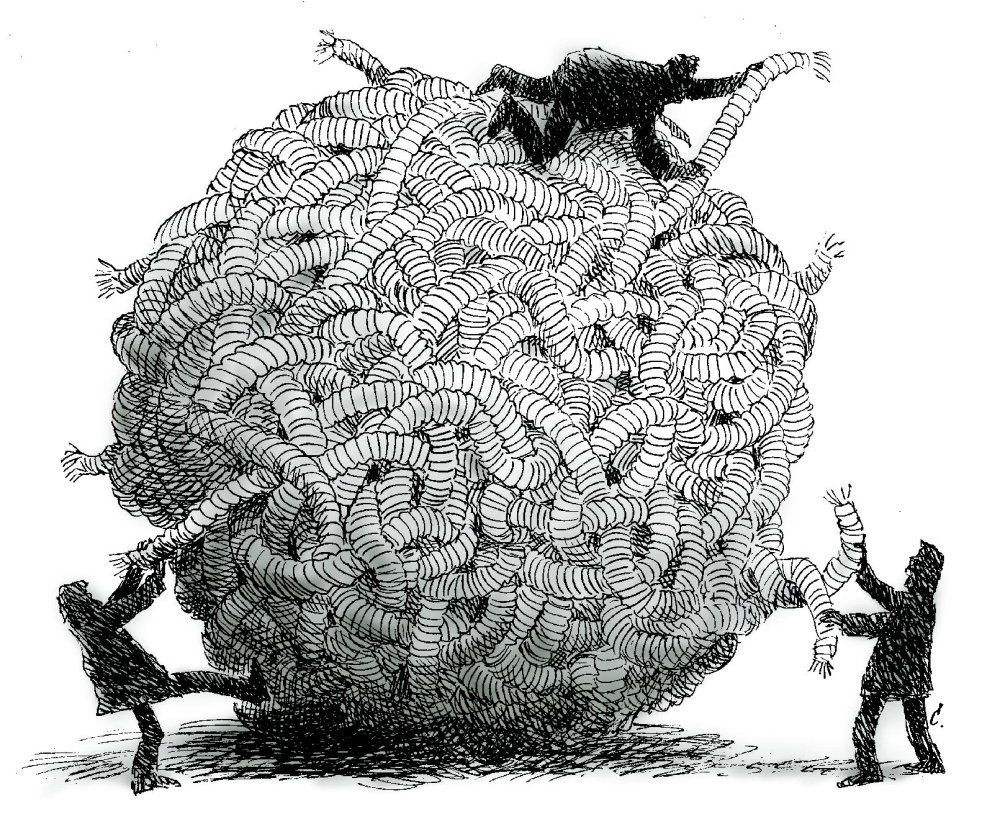
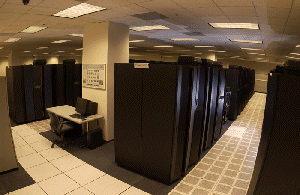

How can you ensure data provenance and accurate data analysis?
Data Provenance
Provenance describes the origin of an object. Data provenance refers to the knowledge of where data originate, where they were collected, by whom, for what reason, and similar aspects that help to understand how the data were originally gathered, processed and altered. In daily use, the term “data provenance” refers to a record trail that accounts for the origin of a piece of data (in a database, document or repository) together with an explanation of how and why it got to the present place (Encyclopedia of Database Systems, pp 608-608). You can also call it the process of keeping records of changes in the data. The need for Data Provenance increases as the reuse of datasets becomes more common in research. The term was originally mostly used in relation to works of art, but is now used in similar senses in a wide range of fields (Wikipedia).
{kind=link}
Researchers regularly use a lab notebook or a journal to document their hypotheses, experiments and initial analysis or interpretation of these experiments. If you manually change data in a dataset, this should also be documented. Sometimes records of changes in data can be kept by adding notes to programmes or scripts that are used.
- Electronic Lab Journals or Electronic Lab Notebooks are used to meticulously describe and document the process of analysis. Mostly used used in a laboratory environment,; biolab, chemical lab, etc.
- For computational analyses, Computational Notebooks like Jupyter notebook are used, where you can describe the analysis steps alongside the computer code in different languages like Python, R, Spark, etc. It is important to document steps and changes in your code by writing comments. This way, others and future you can understand how your code works.
- The Open Science Framework connects different storage types you already use (for example, Dataverse) and logs automatically all changes of all the steps you make while you progress. With the fine grained history-log and version control system of OSF, you can see all steps you made. You can store and archive the whole provenance trail for citable reproducibility.
Finally, when a dataset contains personal data, data provenance can help researchers to understand the specifics and the context in which the data were gathered, also to be able to assess whether or not the informed consent given for the first research, is applicable.
For every step of your data analysis, good Data Documentation is necessary.
Data processing
Data cleaning
The process of detecting and correcting (or removing) corrupt or inaccurate information or records, is called data cleaning. In essence, it refers to identifying incomplete, incorrect, inaccurate or irrelevant parts of the data and then replacing, modifying, or deleting this data (Wikipedia). Depending on the type of analysis that is done, different pieces of software can be used to do this data cleaning. More often than not, the same software can also be used to perform the analysis. Licensed software may sometimes also be installed on personal computers or laptops.

Software especially designed to clean re-used data is OpenRefine. It cleans starting and trailing blank spaces in cell field, clusters values based on similarities (e.g. in free text fields: Alphen a/d Rhijn, alfen ad rijn, etc. can be easily clustered), normalise data fields into one standard, etc. See below for several tutorials.
In some cases, researchers write their own scripts (in programming languages such as Python, R or SQL) to clean data, in which case the process must be documented. Researchers should include their scripts when they archive the datasets to allow for replication and verification.
Extra background information:
- EMGO Quality Handbook on data cleaning
- Making sense of data I: a practical guide to exploratory data analysis and data mining / Glenn J. Myatt, Wayne P. Johnson, 2014 (eBook)
- Open Refine
- Data Carpentry Open Refine website
- Tutorial by the Programming Historian
- Introduction to Digital Humanities with Open Refine
For every step of your data cleaning, good documentation and clarifying the data provenance is necessary.
Data transcription
It is common in many fields to hold interviews, focus group sessions, or make other observations that were recorded - video or audio. If indeed you have done so, and you need to have the text transcribed, there are several ways to do this. One option is to do this by hand, although this is very time-consuming.
Another option is to pay a transcription service to make the transcription or to use specialised software. VU Amsterdam has drawn up processing agreements with one transcription service, Transcript Online, and one transcription software service, Amberscript.
You can find more information on the VU Library page on what these transcription options do, how they work, how much they cost, and how they can be used.
Anonymisation/Pseudonymisation
Processing of personal data requires you as a researcher to make sure that any personal data collected from a human subject is according to the EU GDPR regulation. Anonymisation and Pseudonymisation are two ways to make personal data less easy to identify, in other words, it allows you to de-identify personal data.
There are various online tools that may help facilitate these processes. VU Amsterdam has therefore recommended Amnesia as one of the tools to assist in the anonysmisation/pseudonymistaion of data.
VU Amsterdam is preparing a decision guide on anonymisation and pseudonymisation.
Data analysis
Data Analysis
Although data analysis is an ongoing process throughout the research project, this page focuses on the analysis of the data subsequent to its collection. To ensure that research is empirical and verifiable, it is crucial that researchers keep records (data documentation) of every step made during the data analysis.
Data analysis converts raw/processed data into information that is useful for understanding. Many steps may be required to gain useful information from raw data. The process of processing and analysing data may require computing power not readily available or specific storage and protection options. If multiple parties are involved in the analysis, data sharing may also be necessary.
Data analysis often requires the use of specialised software.The software offered and licensed by the university currently includes: Stata, SPSS, and Atlas.TI. For open software, see below.
In some cases researchers write their own scripts to analyse the data. At VU Amsterdam, most scripts are written in R, Python and SQL.
If you want to read up on data analysis you should check out what journal articles and books VU Amsterdam library has available on the subject:
Open Software
Using open software increases the Accessiblity, Interoperability and Reusability of your data. For that reason, we recommend that you use open software as much as possible for your data analysis. This could be software, code or scripts that you have written yourself - where possible, please make this software public, so your analysis is reproducible. Examples of open software are R and Python, which can be used instead of proprietary, commercial software such as SPSS and Matlab.
Researchers often write their software themselves. There are also organisations that specialise in writing research software, such as the eScience Center. The eScience Center offers the software they built for free use online. Their software is tagged with a DOI and stored in Zenodo as well as GitHub.
If you use software for analysing personal or otherwise sensitive data, you need a processing agreement with the developer if the software does not run locally. You can contact your 🔒 Privacy Champion if you are not sure if you need one, and for help to set up a processing agreement.
There are several ways in which to start using open software:
- For Python: you should install Anaconda and launch the Jupyter Notebook from the Navigator.
- For R: you should install Anaconda and launch R Studio from the Navigator.
- Use the Software Carpentries to learn the basics of programming in Python and R and version control with Git
- Read the recommendations for FAIR Software.
VU Amsterdam has several research groups that offer their code online. You can find them here:
Compute services
If your pc or laptop takes too much time performing your analysis, it is time to scale up to a higher level. There are several options for employees and students who require more computing power than their own desktop or laptop can provide.
Several options are detailed below. 🔒 Contact IT for Research for advice on which solution could best fit your workflow
High Performance Computing (HPC)

Roughly speaking, you should try to get access to the HPC when you need to stick a post-it on your laptop or PC that says: “do not touch, analysis ongoing”. Or when you want to run analyses parallel to each other, because they take too long. It is important to consider such a situation at the very beginning of your research or when writing your Data Management Plan: is it conceivable that your dataset will become so large or your analysis so complicated that you will need HPC? Please note that this can occur for any discipline and any sort of data, qualitative and quantitative. If you may need HPC, you also need to reconsider your analysis methods. Programmes like SPSS and Excel do not run well on a HPC, and you would need to (learn to) write scripts in R or Python. If you want to know if using HPC may be necessary or useful for your project, you can contact IT for Research to ask for more information (select the “Onderzoek service domain”).
SURF Snellius Compute Cluster
Snellius is the Dutch National supercomputer hosted at SURF. The system facilitates scientific research carried out in many Universities, independent research institutes, governmental organizations, and private companies in the Netherlands.
It’s a service comprising a wide range of resources, compilers and, such as R statistics and MATLAB, and libraries. SURF continually adjusts the service to the needs of the user community. For example, Snellius Compute Cluster includes accelerators (very fast processors),high memory nodes and GPU nodes.
You can find more information on the SURF Snellius Wiki.
ADA Compute Cluster
IT for Research (ITvO) offers access to your own Linux computational cluster at VU Amsterdam. ADA is a managed service for high performance computing (HPC). Research groups can add their own compute server hardware to ADA, ITvO will take care of configuring and maintaining the software stack on your servers.
ADA also has several “community” nodes for use by all VU researchers, sponsored by VU Amsterdam HPC Council.
ADA is connected to SciStor providing easy access to your research data and analysis result.
VU JupyterHub for education
If you are not yet ready to take the leap to cluster computing and work with Python consider JupyterHub. VU IT has built a Jupyter Notebook environment meant mainly for Education purposes, but accessible for researchers as well on https://hub.compute.vu.nl/
(Virtual) servers
There are also several options to run applications in a server environment. This is useful if for example you use software that does not work on HPC, you want to run a web service, you want to create a research environment for your project. There are several options available for researchers.
SciCloud
IT for Research (ITvO) offers a virtual server environment where you can run your own server (Linux or Windows). ITvO installs the basic operating system and you are free to install needed software. Web services can be made accessible on the internet. You can find more information and a request form on the 🔒 VU service portal
SURF Research Cloud
SURF also offers a virtual server environment. Several environments with pre-installed software can easily be installed from a catalog. Find more information on the SURF wiki.
Dedicated hardware
Sometimes your workload needs dedicated hardware. ITvO offers the option to host your own server hardware in our on-campus data center. Please 🔒 Contact IT for Research to discuss possibilities.